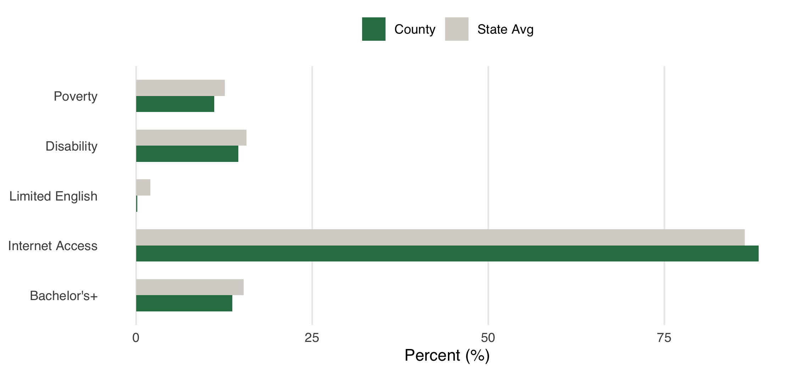
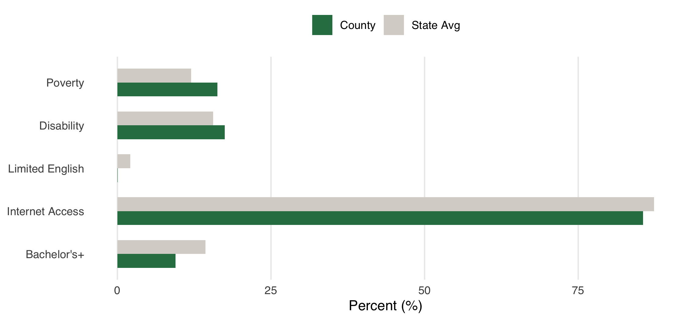
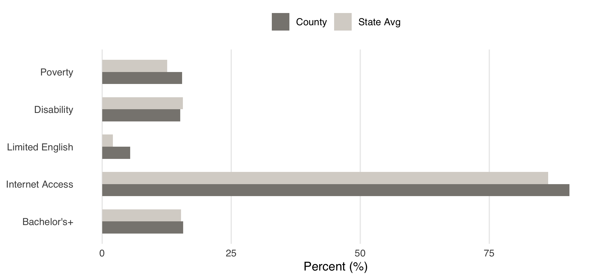
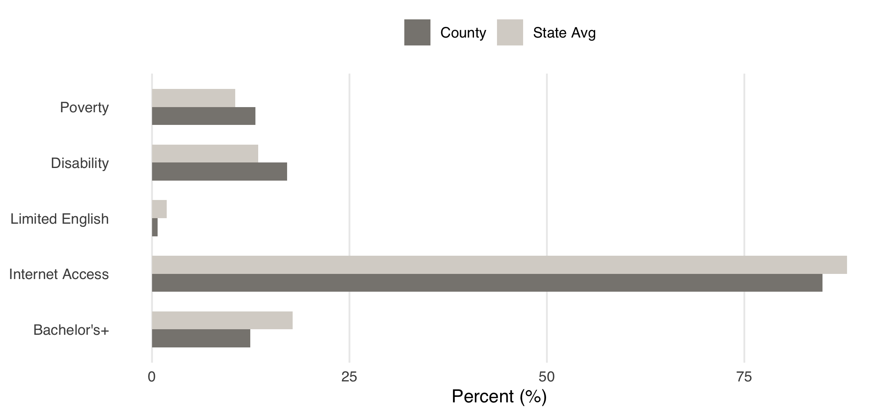
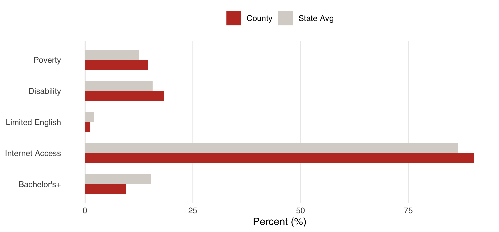
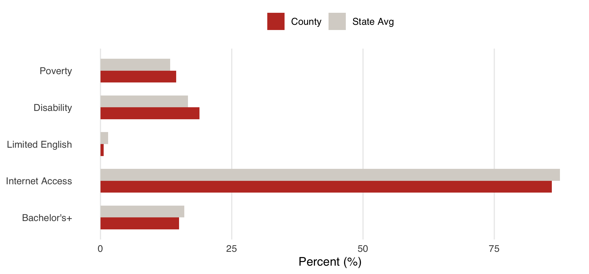

Case Studies
Case Studies
Six Counties, Three Stories
The six case-study counties were drawn from Model 4 residuals — the comprehensive specification — and represent three distinct patterns relative to model predictions. Over-performers suggest something beyond demographics is mobilizing voters: institutional access, civic infrastructure, or political context. As-expected counties serve as baselines where structural conditions straightforwardly predict participation. Under-performers raise questions about suppression, disengagement, or barriers not captured by the model.
In each tail, one county represents the most extreme case and the second a more moderate outlier — letting the analysis show that the pattern holds beyond the very furthest tails. The two as-expected counties sit adjacent to the median rank with residuals near zero.
Each county profile includes: (1) key model statistics, (2) a comparison of the five original CLC framework predictors against the state average, and (3) qualitative findings from secondary source analysis.
Over-Performers
Jasper County, IL
Predictor Profile

County values vs. Illinois state average for the five framework predictors.
Qualitative Analysis
Jasper County, Illinois has a turnout rate of 77.7% compared to a predicted rate of 66.3%, a +11.4 percentage point gap and the single most overperforming county in the dataset (rank 437 of 437). Despite the magnitude of this residual, no formal mobilizing institution stands out — there is no identifiable GOTV organization, no notable civic association, and no documented voter-mobilization initiative.
Jasper’s overperformance is better understood as reflecting informal social capital rather than identifiable mobilizing organizations. With a population of approximately 9,300 — entirely rural — Jasper has the demographic profile and tight community structure that the political science literature consistently links to elevated rural turnout. In small communities, voting is socially visible: neighbors know whether their neighbors voted, religious institutions disseminate election information and apply normative pressure, and the perceived consequence of any individual vote is amplified by smaller electorates.
Jasper also sits in a context of relative economic momentum. Its inflation-adjusted GDP grew approximately 29% between 2018 and 2022, dramatically outpacing Illinois’s 1% statewide growth rate over the same period. Local development organizations such as Jasper County Economic Development Inc. (JEDI), established in 2012, signal community coordination and forward-looking civic infrastructure. Strong Republican identification provides additional partisan mobilization energy in a county whose political culture is unambiguous.
None of these factors maps cleanly onto a single formal mobilizing institution. Rather, they constitute the kind of dense informal civic environment that drives rural overperformance in turnout models — a pattern documented in the literature on rural social capital and voter participation.
Key Finding Jasper’s overperformance reflects informal rural social capital rather than identifiable formal institutions. Tight community networks, normative voting pressure, religious and partisan mobilization channels, and economic momentum together produce turnout substantially above what demographic and structural variables alone would predict.
Martin County, IN
Predictor Profile

County values vs. Indiana state average for the five framework predictors.
Qualitative Analysis
Martin County, Indiana has a turnout rate of 66.1% compared to a predicted rate of 57.4%, a +8.7 percentage point gap (rank 434 of 437). This is particularly striking given Indiana’s broader voting environment: Indiana ranks 50th of 51 nationally on the Indiana Bar Foundation Civic Index for voter turnout, and the state imposes some of the most restrictive registration, identification, and absentee voting rules in the Midwest.
Martin’s overperformance is best understood as a compositional effect rather than a mobilization effect. Naval Surface Warfare Center Crane Division (NSWC Crane), located within the county, employs roughly 6,500 federal civilian employees and contractors, including over 3,000 STEM workers and approximately 1,000 engineers. The base has hired more than 1,300 personnel in the last three years alone. Average wages in Martin County are approximately 6% above the national average — atypical for a rural county and reflective of Crane’s concentration of high-skill federal employment.
In a county of fewer than 10,000 residents, this federal workforce radically reshapes who actually lives there. The model sees Martin as a rural Indiana county; in practice, its effective workforce composition resembles a federal research community embedded in a rural setting. Federal employees, particularly those in technical and professional roles, vote at consistently higher rates than the general population, and the model’s standard demographic predictors — education, internet access, poverty, age — do not fully capture this concentration of federally-employed, professionally-engaged residents.
Local development organizations such as the Martin County Alliance reinforce this picture of community stability and coordination, and rising property values (approximately 6% in 2023–2024) signal continued economic confidence. Together, Crane’s workforce concentration and the surrounding civic-economic infrastructure produce a county whose civic-engagement propensities exceed what its rural geography and standard demographic measures would suggest.
Key Finding Martin’s residual is less about what mobilizes voters than about who lives there. NSWC Crane’s federal workforce — 6,500 employees in a county of fewer than 10,000 — reshapes the effective demographic profile of Martin County beyond what standard ACS predictors capture. This case illustrates how the presence of a major federal institution can drive higher-than-expected turnout through compositional rather than mobilizational mechanisms, even within a state environment otherwise hostile to participation.
As-Expected
Rock Island County, IL
Predictor Profile

County values vs. Illinois state average for the five framework predictors.
Qualitative Analysis
Rock Island County, Illinois has a turnout rate of 61.1% compared to a predicted rate of 61.0% — essentially zero residual (rank 214 of 437, near the median). Unlike the over- and under-performers, the analytic question for Rock Island is not why is it an outlier but why does the model predict it so cleanly.
Rock Island is part of the Quad Cities metropolitan area along the Mississippi River, a mid-sized urban-industrial county of approximately 145,000 residents. It is demographically diverse, with a substantial Latino population, an established Black community, and a mixed manufacturing-and-services economy anchored partly by Rock Island Arsenal (a federal Army installation). Politically, the county has historically leaned Democratic but has been competitive in recent cycles.
No unusual mobilizing or suppressing factors are evident. Standard institutional features — Illinois’s moderately accessible voting environment, no exceptional civic infrastructure, no documented access barriers — apply uniformly. The county’s structural complexity (urban, diverse, federally-employed in part, industrial) is precisely the kind of profile that could reveal model bias if the framework were systematically over- or under-predicting for diverse urban-edge counties. That Rock Island lands almost exactly on the predicted line validates that the model handles this profile without bias.
Key Finding Rock Island serves as a validation case. Its near-zero residual indicates that the comprehensive model framework adequately captures turnout dynamics in structurally complex, demographically diverse urban-edge counties — a non-trivial result given the model’s primary calibration on rural Midwestern counties.
Rusk County, WI
Predictor Profile

County values vs. Wisconsin state average for the five framework predictors.
Qualitative Analysis
Rusk County, Wisconsin has a turnout rate of 73.6% compared to a predicted rate of 73.6% — a residual of essentially zero (rank 212 of 437, near the median). Unlike the over- and under-performers, the analytic question for Rusk is why the model predicts it so cleanly, not why it stands out.
Rusk is a small, predominantly rural county of approximately 14,000 residents in northwestern Wisconsin. It is overwhelmingly white, lower-income than the state average, and economically anchored by agriculture, light manufacturing, and forestry. Wisconsin’s institutional voting environment — same-day registration, no-excuse absentee, late polling hours — applies uniformly, and Rusk shows no exceptional local civic infrastructure or unusual mobilization activity.
Rusk’s near-zero residual indicates that the model captures rural Wisconsin counties cleanly when neither unusual civic capacity (like Jasper IL) nor unusual barriers or institutional erosion (like Gogebic MI just across the state line) is present. It is a quiet baseline case — the model’s structural predictions translate directly into observed turnout when the surrounding conditions are typical for the region.
Key Finding Rusk serves as a rural validation case. Its near-zero residual confirms that the comprehensive model framework adequately captures turnout dynamics in structurally typical rural counties without unusual mobilizing or suppressing factors. Paired with Rock Island, the two as-expected cases demonstrate the model’s consistency across both rural and urban-edge contexts.
Under-Performers
Lawrence County, IL
Predictor Profile

County values vs. Illinois state average for the five framework predictors.
Qualitative Analysis
Lawrence County, Illinois has a turnout rate of 50.9% compared to a predicted rate of 57.5%, a −6.6 percentage point gap (rank 7 of 437). Lawrence’s profile is unusual in ways that make its underperformance analytically informative. Despite low income and modest educational attainment, the county has a high homeownership rate (71.8%) and very low median property values ($99,100) — typically a turnout-positive combination, since homeownership predicts political stability and embeddedness. The county also operates one of only eight Foreign Trade Zones in Illinois, indicating some institutional economic infrastructure.
Yet despite these latent advantages, no identifiable local civic infrastructure activates them. There is no documented GOTV organization, no notable civic association, and no evidence of organized voter-mobilization activity. The Republican partisan environment provides some ambient mobilization, but no formal organizational channel translates Lawrence’s stable-population, homeowning profile into participation.
Lawrence parallels Gogebic in suggesting that demographic and structural conditions are not sufficient on their own. Gogebic’s mobilizing institutions eroded; Lawrence’s may never have been present. Together, the two cases support a complementary argument: civic infrastructure is the missing variable. Where it is present (whether formally as in Martin’s Crane workforce, or informally as in Jasper’s rural social capital), turnout exceeds prediction. Where it is absent or eroded, turnout falls short — even when other structural conditions (homeownership, partisan alignment, economic stability) would suggest higher participation potential.
Key Finding Lawrence’s underperformance illustrates that latent turnout potential — high homeownership, partisan alignment, modest economic infrastructure — does not translate into actual participation without complementary civic infrastructure. The absence of identifiable mobilizing organizations or civic associations leaves the county’s structural advantages unactivated.
Gogebic County, MI
Predictor Profile

County values vs. Michigan state average for the five framework predictors.
Qualitative Analysis
Gogebic County, Michigan has a turnout rate of 70.3% compared to a predicted rate of 79.7%, a −9.4 percentage point gap (rank 3 of 437). While the model accounts for demographic and structural characteristics, turnout is substantially lower than expected.
What distinguishes Gogebic is its political trajectory. Historically, the county was part of a cluster of union-oriented, Democratic-leaning counties in Michigan’s Upper Peninsula. However, like many similar areas, Gogebic has undergone a clear political realignment in recent elections, shifting from supporting Barack Obama to consistently voting for Donald Trump. Of the 7,038 households in Gogebic County in 2023, 17% earned below the Federal Poverty Level and 33% were ALICE households — earning above the FPL but unable to afford basic needs — leaving 50% of households below the ALICE Threshold. Turnout dropped by 6.5 percentage points from 2020 to 2024, a steeper decline than most peer counties.
This transition likely reflects a broader erosion of the institutional and organizational structures that historically supported voter participation. Union networks and local party organizations, which once played a central role in mobilizing voters, have weakened over time. While political preferences have shifted, these mobilizing structures have not been fully replaced, potentially resulting in lower levels of engagement and turnout. Local nonprofit infrastructure exists (197 tax-exempt organizations registered in the county), but no identifiable civic organization is positioned to fill the mobilization role unions and local parties once played.
Gogebic’s case suggests that political realignment may disrupt established patterns of civic participation. Even as partisan alignment changes, the decline of historical mobilization institutions can lead to reduced turnout, highlighting the importance of organizational infrastructure in sustaining participation beyond demographic factors.
Key Finding Gogebic’s underperformance illustrates how political realignment can outpace the rebuilding of mobilizing infrastructure. The unions and party organizations that historically delivered voters in this Upper Peninsula county have weakened, but new institutional channels have not emerged to replace them — a pattern with broad implications for declining-Democratic, realigning rural counties across the Midwest.
Cross-County Patterns
Comparing Across Cases

All six case-study counties plotted across the five framework predictors, with state-tier benchmarks.